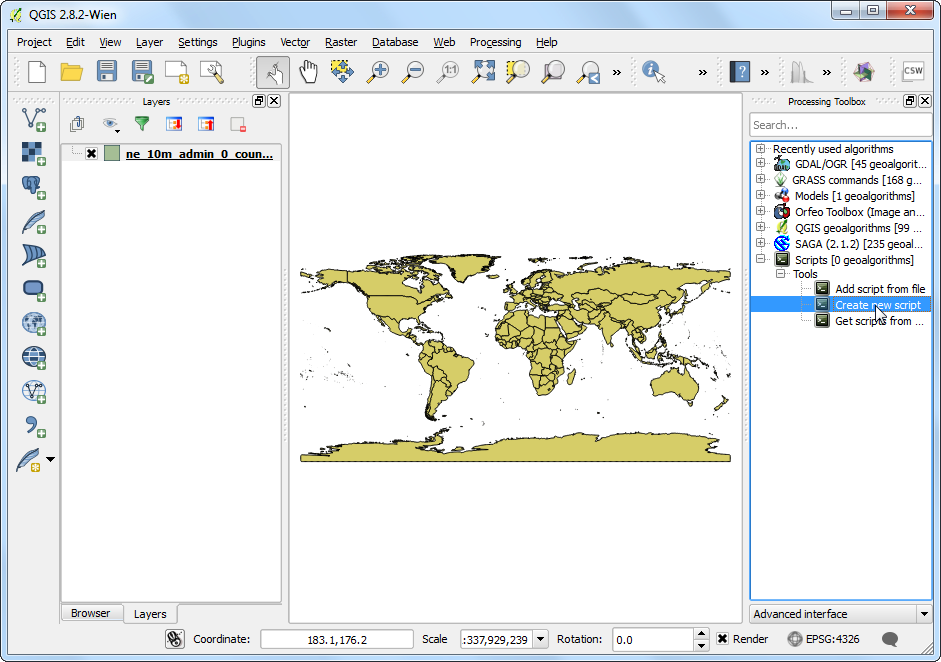
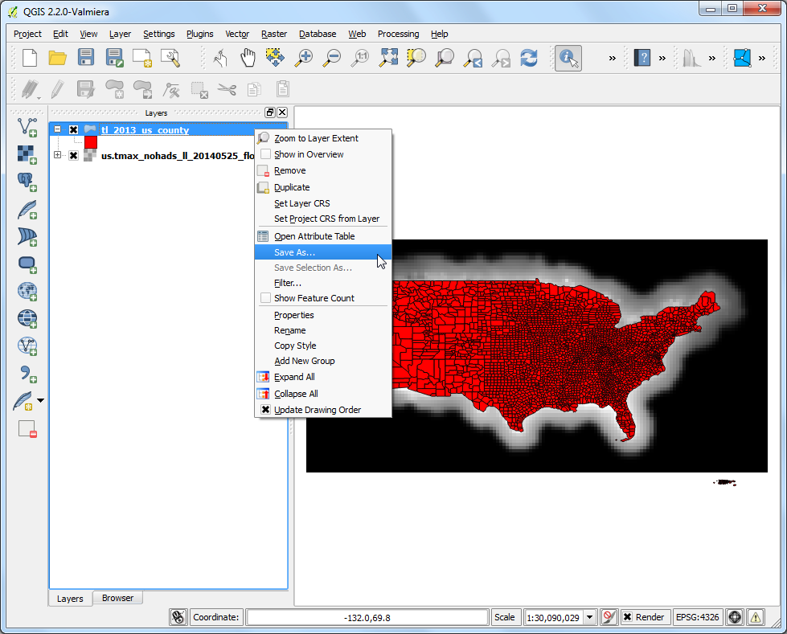
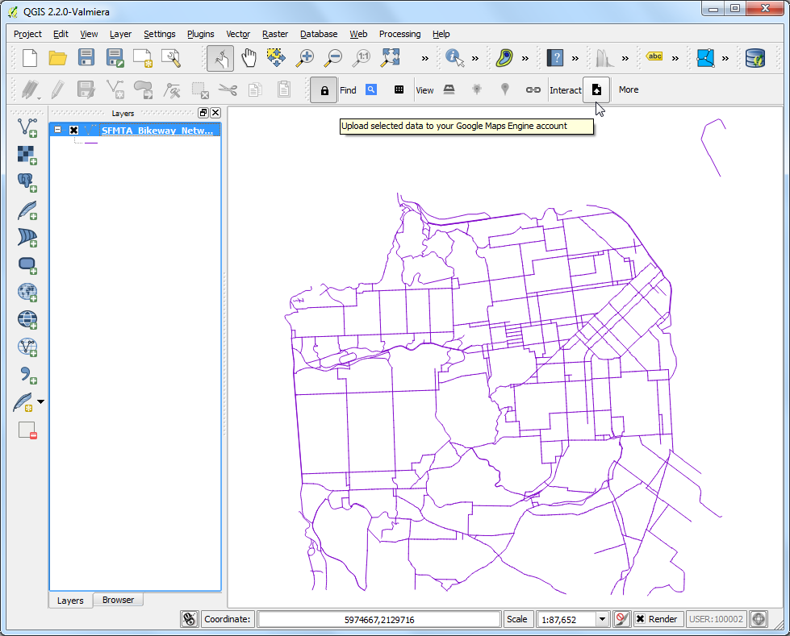
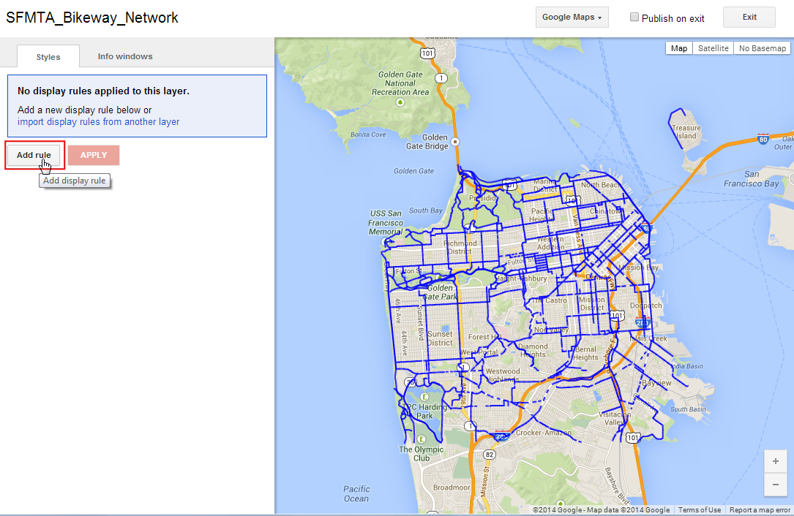
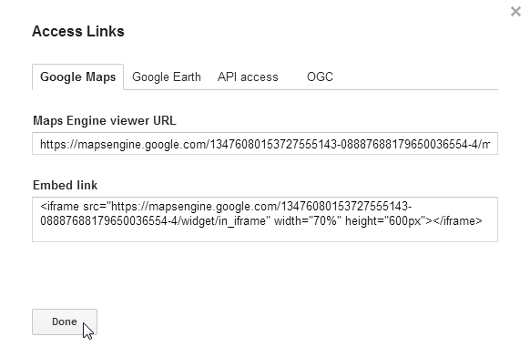

Complexe werkstromen automatiseren met behulp van Grafische modellen bouwen
Werkstromen in GIS omvatten gewoonlijk vele stappen - waarin elke stap een tussenliggend resultaat genereert die wordt gebruikt in de volgende stap. Als u de invoergegevens wijzigt of een parameter aan wilt passen, zult u opnieuw handmatig het gehele proces moeten uitvoeren. Gelukkig heeft QGIS Grafische modellen bouwen ingebouwd dat u kan helpen uw werkstroom te definiëren en die uit te voeren met één enkele druk op de knop. U kunt deze werkstromen ook als batch uitvoeren over een groot aantal invoeren.
Overzicht van de taak
Deze handleiding laat zien hoe een model te bouwen om gebieden uit te nemen met een bepaalde klasse uit een geclassificeerd raster voor landgebruik.
Procedure
Onze werkstroom voor deze oefening zal de volgende stappen bevatten.
Een algoritme Majority Filter toepassen op het invoerraster voor landgebruik. Dit zal de ruis in onze uitvoer verminderen door het elimineren van geïsoleerde pixels.
Het resulterende raster converteren naar een polygoonlaag.
Query naar een waarde voor een klasse uit de attributentabel van de polygoonlaag en een laag voor die klasse maken.
De volgende stappen geven een overzicht van het proces om het bovenstaande proces naar een model te coderen en dat uit te voeren op de gedownloade gegevenssets.
Start QGIS en ga naar .

Het dialoogvenster Processing - Grafische modellen bouwen bevat een paneel aan de linkerkant en een hoofdvenster. Selecteer de tab Invoer in het linkerpaneel en sleep + Raster layer in het hoofdvenster.

Een dialoogvenster Parameterdefinitie zal openen. Voer Invoer in als de Parameternaam en markeer Vereist als``Ja``. Klik op OK.

U zult in het kaartvenster een vak zien met de naam Invoer. Dit vertegenwoordigt het raster voor landgebruik dat we zullen gebruiken als invoer. De volgende stap is om een algoritme Majority filter toe te passen. Schakel naar de tab Algoritmen in de linker benedenhoek. Zoek naar het algoritme en u zult het zien vermeld onder de provider SAGA. Sleep het naar het kaartvenster.
Notitie
Indien u dit algoritme of een van de volgende in deze handleiding genoemde algoritmen niet ziet, zou u mogelijk de Simplified Interface van de Processing Toolbox gebruiken. Schakel over naar de Advanced Interface met behulp van de keuzelijst onderaan de Processing Toolbox in het hoofdvenster van QGIS.

Een dialoogvenster voor configuratie van Majority Filter zal openen. Laat de waarden op hun standaarden staan en klik op OK.

Het zal u opvallen dat er een nieuw vak, genaamd Majority Filter, in het hoofdvenster staat en dat dat is verbonden met het vak Invoer. Dit omdat het algoritme Majority Filter het raster Invoer gebruikt als zijn invoer. De volgende stap in onze werkstroom is om de uitvoer van het Majority filter te converteren naar een vector. Zoek naar het algoritme Polygonize (raster to vector) en sleep het in het hoofdvenster.
Notitie
De vakken kunnen worden verplaatst en geschikt door er op te klikken en te slepen terwijl de linker muisknop ingedrukt wordt gehouden. U kunt ook het scroll-wiel gebruiken om in- en uit te zoomen in het venster voor het model.

Selecteer ‘Filtered Grid’ uit het algoritme ‘Majority Filter’ als de waarde voor Input layer. Klik op OK.

De laatste stap in de werkstroom is voor een query naar een waarde van een klasse en een laag te maken uit de overeenkomende objecten. Zoek naar het algoritme Extract by attribute en sleep het in het hoofdvenster.

Selecteer ‘Vectorized’ uit het algoritme ‘Polygonize (raster to vector) als de Input Layer. We willen de pixels uitnemen die Croplands vertegenwoordigen. De overeenkomstige pixelwaarde voor deze klasse zal 12 zijn. (bekijk Code Values). Voer DN als het Selection attribute en 12 als de value. Omdat de uitvoer van deze bewerking het uiteindelijke resultaat zal zijn, moeten we de uitvoer eên naam geven. Voer vectorized class in als de Output.

Voer als Modelnaam in vectorize en bij Group name raster. Klik op de knop Opslaan.

Noem het model vectorize en klik op Opslaan.

Nu is het tijd om ons model te testen. Sluit Grafische modellen bouwen en schakel over naar het hoofdvenster van QGIS. Ga naar .

Blader naar het gedownloade bestand LC_hd_global_2001.tif.gz en klik op Open. Ga, als het raster eenmaal is geladen, naar .

Zoek het nieuw gemaakte model op onder . Dubbelklik om het model te starten.

Selecteer LC_hd_global_2001 als de Input en klik op Run.

U zult zien dat alle stappen worden uitgevoerd zonder enige invoer van de gebruiker. Als de processing eenmaal is voltooid, zal een nieuwe laag vectorized_class worden toegevoegd aan QGIS. Laten we het model enigszins verbeteren. Klik met rechts op het model vectorize en selecteer Model bewerken.

In stap 12 hebben we de waarde 12 hard gecodeerd als de waarde voor de klasse. In plaats daarvan kunnen we die specificeren als een parameter voor invoer die de gebruiker kan wijzigen. Schakel, om dit toe te voegen, naar de tab Invoer en sleep + String in het model.

Voer als Parameternaam in Class. Voer 12 in als de Standaardwaarde.

We zullen nu het algoritme Extract by attribute wijzigen om deze invoer te gebruiken in plaats van de waarde die hard gecodeerd is. Klik op de knop Bewerken naast het vak Extract by attribute.

Klik op de pijl naar beneden voor Value en selecteer Class. Klik op OK.

U zult in het diagram van het model nu zien dat het algoritme Extract by attribute nu 2 invoeren gebruikt. Grafische modellen bouwen heeft een sneltoets om het model te starten en te testen. Klik op de knop Start model van de werkbalk.

Onthoud dat het dialoogvenster van het model een nieuw veld heeft dat te bewerken is, genaamd Class. Voer 16 in als de waarde voor Class en klik op Run.

Als de verwerking is voltooid, zult u zien dat we met slechts één druk op de knop we in staat waren een complexe werkstroom uit te voeren en het gebied voor de klasse 16 uit te nemen.

Nu ons model gereed is, kunnen we het net zo gemakkelijk uitvoeren op een nieuwe rasterlaag. Laad het bestand LC_hd_global_2012.tif.gz door te gaan naar . Klik op het model vectorize` in het paneel Processing Toolbox.

Kies de laag LC_hd_global_2012 als de Input en klik op Run.

Als de nieuwe uitvoer eenmaal is geladen kunt u de wijzigingen in de Croplands vergelijken tussen 2001 tot en met 2012.

Het is altijd een goed idee om documentatie ana uw model toe te voegen. Grafische modellen bouwen heeft een ingebouwde Help editor die het u mogelijk maakt Help direct in te bedden in het model. Klik met rechts op het model vectorize en selecteer Model bewerken.

Klik op de knop Help model bewerken op de werkbalk.

Selecteer, in het dialoogvenster Help editor, een element uit het paneel Selecteer element om te bewerken en voer de tekst voor de Help in bij Element beschrijving. Klik op OK. Deze Help zal beschikbaar zijn op de tab Help wanneer u het model start om uit te voeren.

Modellen kunnen veel tijd besparen en maken het mogelijk uw eigen werkstroom eenmaal te beschrijven en die dan meerdere keren uit te voeren. U kunt zelfs uw model delen met andere gebruikers. De bestanden voor het model worden opgeslagen in de map .qgis2. U kunt het bestand .model naar een andere gebruiker sturen die het naar de toepasselijke map op zijn computer kan kopiëren en het zal verschijnen in de Processing Toolbox. D locatie van de map met modellen is, afhankelijke van het platform, als volgt: (Vervang username door uw gebruikersnaam)
Windows
c:\Users\username\.qgis2\processing\models\
Mac
/Users/username/.qgis2/processing/models/
Linux
/home/username/.qgis2/processing/models/